| 14 | 26 | 65 | 67 |
| 9 | 14 | 18 | 38 |
| 11 | 20 | 30 | 49 |
| 13 | 16 | 19 | 41 |
| 20 | 27 | 28 | 48 |
How long should a block be?
Statistics Seminar, University of Glasgow
Léo Belzile, HEC Montréal
(joint work with Anthony Davison)
(joint work with Anthony Davison)
Wednesday, Apr 22, 2026
Block maximum method
Idea promoted for engineering applications by Emil Gumbel (cf. Gumbel 1958).
- divide a (time) series of length \(n\) into \(n_m\) equal-length disjoint blocks of \(m\) successive observations,
- fit the generalized extreme value (GEV) distribution to the resulting sample of \(n_m\) block maxima,
- use the fitted model for risk assessment.
This talk: how long should a block be?
Motivating example
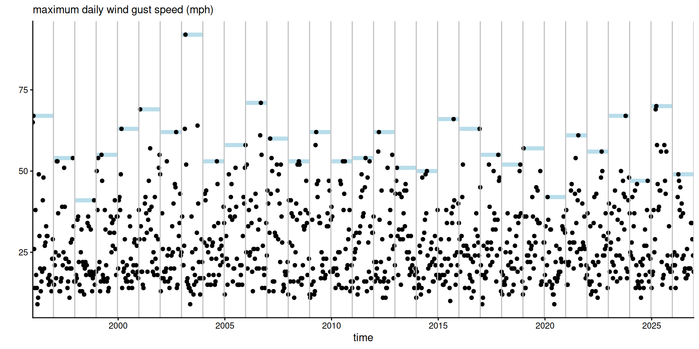
Figure 1: Daily maximum wind gust speed in Cheeseboro, California, for January 1st to February 1st of 1996–2026, for a total of \(31 \times 32\) measurements.
Extremal types theorem
The justification for using the GEV comes from Fisher and Tippett (1928), Mises (1936), Gnedenko (1943).
If \(G\) is a distribution function and there exist location and scaling sequences \(d_m\) and \(c_m>0\) such that the maximum of \(m\) observations has a non-degenerate limiting distribution \[ \lim_{m \to \infty}G^m(c_mx+d_m) = F(x) \] then \(F(x)\) must be a GEV distribution function.
Generalized extreme value distribution
The GEV distribution function is \[\begin{align*} F(x; \mu, \sigma, \xi)=\begin{cases} \exp\left[-\left\{1+\xi \frac{x-\mu}{\sigma}\right\}_{+}^{-1/\xi}\right], & \xi \neq 0, \\ \exp\left[-\exp\left\{-\frac{x-\mu}{\sigma}\right\}\right], & \xi =0. \end{cases} \end{align*}\] with location \(\mu\in \mathbb{R},\) scale \(\sigma>0\) and shape \(\xi\in \mathbb{R}.\)
The support of \(\mathsf{GEV}(\mu, \sigma, \xi)\) is \(\{x: \sigma + \xi(x-\mu) > 0\}.\)
Regularity conditions and normalizing constants
Suppose that \(\lim_{m \to \infty}G^m(c_mx+d_m) = F(x)\) for \(F(x) \sim \mathsf{GEV}(0,1,\xi).\)
- Assume \(G\) is twice differentiable with possibly infinite endpoint \(x^{\star},\) with density \(g\) and define \(\phi(x)=-G(x)\log G(x)/g(x).\)
- for convergence to the GEV distribution, it is sufficient that \(\lim_{x \to x^{\star}} \phi'(x)=\xi^{\star} \in \mathbb{R}\) (so-called von Mises condition).
- The normalizing constants are obtained from \(-\log G(d_m) = m^{-1}\) and \(c_m=\phi(d_m)\). The speed of convergence depends on the (unknown) \(G.\)
- Penultimate approximation (Smith 1987) is \(\mathsf{GEV}\{d_m, c_m, \phi'(d_m)\}.\)
Quality of approximations
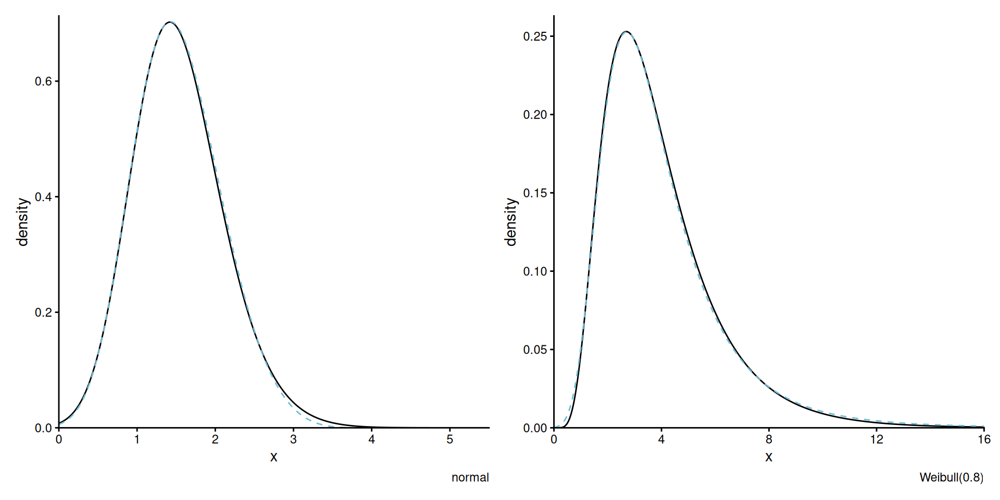
Figure 2: Densities of GEV penultimate approximations (dashed blue) versus true distribution \(G^{30}\) (full black).
Max-stability
The GEV is characterized by max-stability:
if \(X_{j} \stackrel{\mathrm{iid}}{\sim} \mathsf{GEV}(\mu, \sigma, \xi)\), then for any \(m,\) \[\begin{align*} Y = \max\{X_{1}, \ldots, X_{m}\} \sim \mathsf{GEV}(\mu_m, \sigma_m, \xi), \end{align*}\] with \[\begin{align*} \mu_m &=\mu + \sigma (m^\xi-1)/\xi, &\sigma_m &= \sigma m^\xi, &\text{if }\xi &\neq 0,\\ \mu_m &= \mu+\sigma\log m, & \sigma_m &=\sigma,&\text{if }\xi &= 0. \end{align*}\]
Penultimate approximation vs max-stability
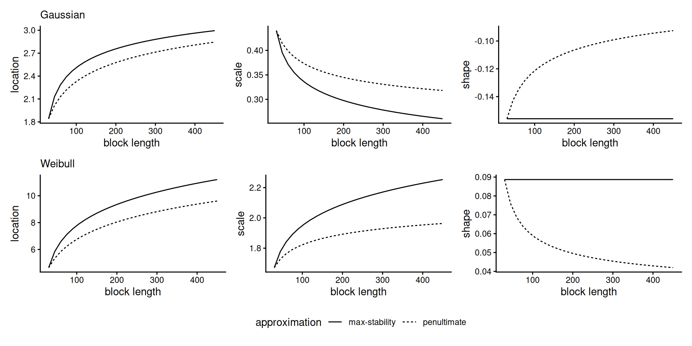
Figure 3: GEV parameters based on max-stable (dashed), and the penultimate approximation (full) for Gaussian (top) and Weibull (bottom).
Research question: How to choose the block length?
Traditional extreme value bias-variance trade-off:
- Smaller block lengths may lead to poor GEV approximation (potentially biased extrapolation).
- Longer blocks lead to smaller sample sizes (more variability).
Other considerations
- Data availability (frequency of records).
- Block maximum is widely viewed as the more robust approach in the applied literature (compared to peaks-over-threshold).
- Theoretical consideration of asymptotic efficiency relative to peaks-over-threshold (Bücher and Zhou 2021).
- Natural (minimum) block length (e.g., annual for seasonally-varying data).
Literature review
Surprisingly, very little work in the area.
Testing for different block lengths
Consider \(nm\) block maxima for \(n, m \in \mathbb{N}.\) We gather observations into an \(n \times m\) matrix of ordered inputs.
Row \(i\) contains the order statistics \(X_{i, (1)} \leq \cdots \leq X_{i, (m)}.\)
Joint distribution of order statistics
Let \(X_{(1)} \leq \cdots \le X_{(m)}\) denote order statistics.
Let \(F\) and \(f\) be the CDF and density of \(X_j \stackrel{\mathrm{iid}}{\sim}\mathsf{GEV}(\mu, \sigma, \xi).\)
The joint density of order statistics is the product of
- the conditional \(X_{(1)}, \ldots, X_{(m-1)} \mid X_{(m)} = x_{(m)},\)
- the marginal \(X_{(m)}\).
Conditional density of lower order statistics
The conditional density of \(X_{(1)}, \ldots, X_{(m-1)} \mid X_{(m)}\) is \[\begin{align*} f_{{(1, \ldots, m-1)} \mid {(m)}}(\boldsymbol{x}_{-(m)}) &= (m-1)!\prod_{j=1}^{m-1}\frac{f(x_{(j)}; \mu, \sigma, \xi)}{F(x_{(m)}; \mu, \sigma, \xi)} \end{align*}\] so the \((m-1)\) smallest observations are, up to permutation, \(\mathsf{GEV}(\mu, \sigma, \xi)\) truncated above at \(x_{(m)}.\)
Distribution of block maximum
The block maximum \(Y=\max(X_1,\ldots, X_m)\) has CDF \(F_{(m)}(x)=F^m(x)\) and density \[\begin{align*} f_{(m)}(x) &= m F(x; \mu, \sigma, \xi)^{m-1}f(x; \mu, \sigma, \xi) \\ &= f(x; \mu_m, \sigma_m, \xi), \end{align*}\] by max-stability.
Likelihood
In the simplest case, we have \[\begin{align*} \mathcal{L}({\boldsymbol{\vartheta}}_0, {\boldsymbol{\vartheta}}_m)=\prod_{i=1}^n f_{{(1, \ldots, m-1)} \mid {(m)}}(\boldsymbol{x}_{i, -(m)};{\boldsymbol{\vartheta}}_0)f_{(m)}(x_{i,(m)}; {\boldsymbol{\vartheta}}_m), \end{align*}\] where
- \({\boldsymbol{\vartheta}}_0 = (\mu, \sigma, \xi)\) are the parameters for \(X_{i, (1)} \leq \cdots \le X_{i, (m-1)}.\)
- \({\boldsymbol{\vartheta}}_m\) are the parameters of the largest observation \(X_{i, (m)}.\)
Under the null hypothesis of max-stability, \({\boldsymbol{\vartheta}}_m=(\mu_m, \sigma_m, \xi) = g(\boldsymbol{\vartheta}_0),\) say.
Rounding and left-censoring
Environmental measurements are frequently rounded to the nearest \(\delta\) unit. We may also want to left-censor observations below \(u.\)
Consider latent \(X^*_i \sim \mathsf{GEV}(\mu, \sigma, \xi)\), where \(X_{i,j} - \delta/2 \le X_i^* \le X_{i,j}+ \delta/2\); the individual observation contribution to the likelihood when \(x_{i,(j)} > u\) are \[\begin{align*} L_{i,j}(\boldsymbol{\vartheta}) = \begin{cases} f(x_{i,(j)}; \boldsymbol{\vartheta}), & \delta=0; \\ F(x_{i,(j)}+\delta/2; \boldsymbol{\vartheta})- F(\max\{x_{i,(j)}-\delta/2, u\}; \boldsymbol{\vartheta}), & \delta > 0. \end{cases} \end{align*}\] The joint likelihood contributions for the \((m-1)\) lowest order statistics of \(m\) are from the GEV distribution right-truncated at \(x_{(m)} + \delta/2\).
Joint likelihood with censoring
The likelihood contribution from a single vector \(x_{i,(1)}, \ldots, x_{i,(m)}\) is \[\begin{align*} L_i(\boldsymbol{\vartheta}_0, \boldsymbol{\vartheta}_m)& = L_{i,m}(\boldsymbol{\vartheta}_m)^{w_{i,(m)}(\boldsymbol{\vartheta}_m)} F(u; \boldsymbol{\vartheta}_m)^{1-w_{i,(m)}(\boldsymbol{\vartheta}_m)} \\& \times \prod_{j=1}^{m-1} \frac{L_{i,j}(\boldsymbol{\vartheta}_0)^{w_{i,(j)}(\boldsymbol{\vartheta}_0)} F(u; \boldsymbol{\vartheta}_0)^{1-w_{i,(j)}(\boldsymbol{\vartheta}_0)}}{F \left(\max\{u, x_{i,(m)} + \delta/2\}; \boldsymbol{\vartheta}_0\right)} \end{align*}\] where the weight \(w_{i,j}(\boldsymbol{\vartheta})\) indicates the probability that \(X^*_{i,j} > u\) (expected likelihood) (Section 2.2 of Varty et al. 2021).
Alternative hypotheses
The idea underlying our testing procedure is to let the parameters of the block maximum differ, by
- \(A_1\): setting \(\mathcal{H}_a: {\boldsymbol{\vartheta}}_m = (\mu_{\omega m}, \sigma_{\omega m}, \xi)\) for some scaling \(\omega > 0\), and testing \(\mathcal{H}_0: \omega=1.\)
- \(A_2\): allowing both location and scale to vary \(\mathcal{H}_a: {\boldsymbol{\vartheta}}_m = (\mu_m+\nu, \phi \sigma_m, \xi)\) and testing \(\mathcal{H}_0: \nu=0, \phi=1.\)
- \(A_3\): letting all three parameters vary \(\mathcal{H}_a: {\boldsymbol{\vartheta}}_m = (\mu_m+\nu, \phi \sigma_m, \xi + \zeta)\) and testing \(\mathcal{H}_0:\nu=0, \phi=1, \zeta=0.\)
We use likelihood ratio statistics to compare the models \(\mathcal{H}_0\) and \(\mathcal{H}_a.\) The asymptotic distribution of the test is \(\chi^2_k\) with \(k\in\{1, 2, 3\}.\)
Setup of power study
We consider different scenarios to assess the power of tests:
- different parametric distributions for alternatives,
- sample sizes \(n \in \{25,50,100\},\)
- number of order statistics \(m\in \{2, 5, 10\},\)
- three alternatives \(\mathcal{H}_a.\)
All power curves are based on 2000 replications, with tests conducted at level 5%.
Alternative distributions
We consider maxima of
- \(\mathsf{normal}(0,1)\) and
- \(\mathsf{Weibull}(1, 0.8).\)
with distribution \(G\) and block of size \(30,\) simulate
- \(X_{(1)}, \ldots, X_{(m-1)}\) from \(G^{30},\)
- \(X_{(m)}\) from \(G^{30\delta},\) but left-truncated at \(x_{(m-1)}\).
Power curves
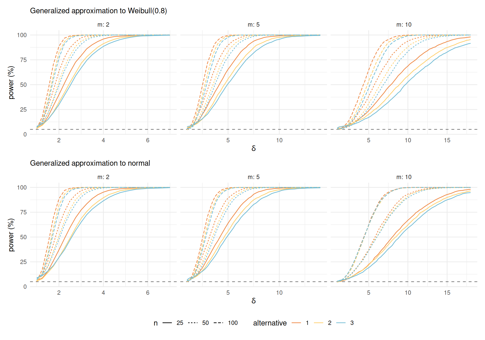
Size of tests
| m | 2 | 5 | 10 | ||||||||
| n | 25 | 50 | 100 | 25 | 50 | 100 | 25 | 50 | 100 | ||
| distribution | alt | ||||||||||
| Weibull | A1 | 6.3 | 5.7 | 5.7 | 6.0 | 5.9 | 5.1 | 5.5 | 5.5 | 5.1 | |
| A2 | 6.0 | 6.1 | 5.8 | 6.7 | 5.3 | 4.5 | 6.0 | 5.5 | 5.5 | ||
| A3 | 7.9 | 7.9 | 6.9 | 7.8 | 6.2 | 5.5 | 6.6 | 5.5 | 6.3 | ||
| normal | A1 | 5.8 | 5.2 | 5.5 | 5.8 | 5.6 | 5.1 | 5.1 | 5.8 | 5.0 | |
| A2 | 5.7 | 6.0 | 5.6 | 5.9 | 5.8 | 4.8 | 4.4 | 5.8 | 5.1 | ||
| A3 | 8.8 | 8.4 | 7.0 | 7.0 | 6.4 | 5.8 | 5.1 | 5.8 | 5.6 | ||
Summary
- As expected, power increases with the sample size \(n\).
- Perhaps surprisingly, the test has more power when \(m\) is small! Possibly due to alternative.
- Alternative 1 is often the most powerful (less degrees of freedom), despite misspecification.
- There is a small size distortion (up to about 5%) for alternative \(A_3\) in small samples.
Stationary sequences with extremal clustering
To investigate serial dependence, we also consider data from first-order max-autoregressive (MAR) processes parametrized in terms of the extremal index \(\theta.\)
Consider the stochastic process obtained through the recursion (Valadares Tavares 1977) \[\begin{align*} X_i &= \max\{X_{i-1}, Z_i\} +\log(1 - \theta), \quad i \geq 1 \\ Z_i &\sim \mathsf{GEV}\{\log(\theta) - \log(1-\theta),1,0\} \end{align*}\] The margins are standard Gumbel, \(X_i \sim \mathsf{GEV}(0,1,0),\) while the distribution of \(Y = \max\{X_1, \ldots, X_{m}\}\) is Gumbel with location \(\log[(m-1)\theta+1].\)
Stationary setting
The extremal types theorem extends to stationary time series (Leadbetter 1974, 1983; Leadbetter et al. 1983).
Under a condition \(D(u_n)\) and for extremal index \(\theta \in (0,1],\) we get instead \[\begin{align*} \lim_{m \to \infty} G^{\theta m}(c_{m}x+d_{m})&= F(x) \end{align*}\] or equivalently \[\begin{align*} \lim_{m \to \infty} G^{m}(c_{\theta m}x+d_{\theta m}) &= F(x). \end{align*}\]
Location parameters of stationary sequences
Max-stability holds asymptotically, but with \(m\theta\) rather than \(m\).
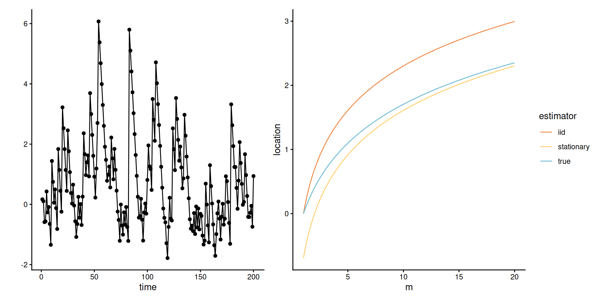
Figure 4: MAR with \(\xi=0\) and \(\theta=0.5\): time series of simulated values (left) and location parameters of the Gumbel maxima based on extrapolating to blocks of size \(m\), taking \(\log(m)\) (iid) and \(\log(m\theta)\) (stationary) as location parameters.
Power curves - max autoregressive
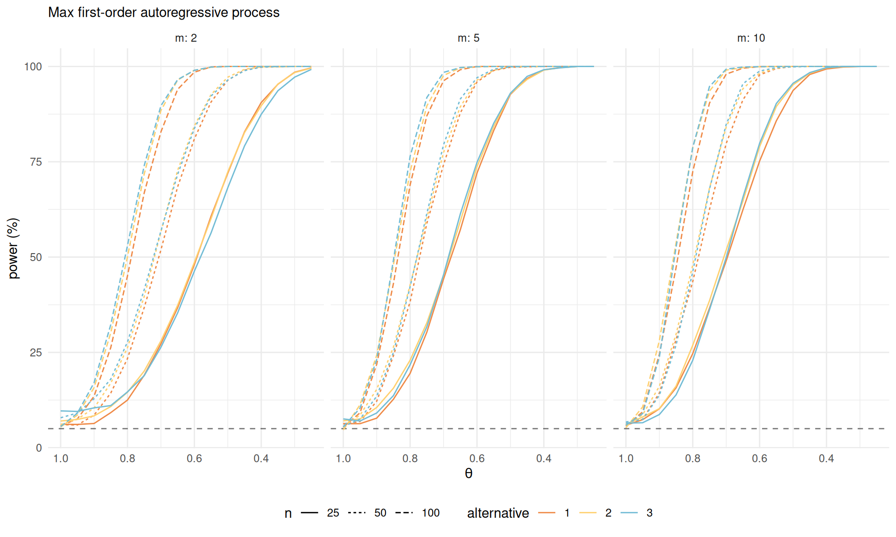
Power study - max-autoregressive
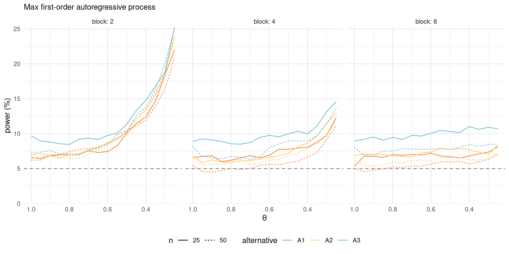
Diagnostic plots
We propose quantile-quantile plots to assess the goodness-of-fit of the model.
Among quantities of interest
- all maxima,
- the block maximum \(X_{(m)}\).
We use a parametric bootstrap scheme for uncertainty quantification.
Confidence intervals for probability-probability plots
Säilynoja et al. (2022) outlines a method for building simultaneous confidence intervals for tests of uniformity in probability-probability plots, evaluated at \(N\) fixed plotting positions \(\nu_1, \ldots, \nu_N \in (0,1)\).
We propose a modification that accounts for estimation uncertainty and potentially unequal samples sizes due to rounding.
Building confidence intervals
- Consider the empirical distribution function (ECDF) \(\mathsf{ECDF}(\nu; \boldsymbol{V}) = n^{-1} \sum_{i=1}^n \mathsf{1}_{\nu \leq V_i}.\)
- If \(V_i\) are independent uniforms, then \(n\mathsf{ECDF}(\nu; \boldsymbol{V})\) is binomial with \(n\) trials and probability of success \(\nu,\) whose distribution we denote \(H(\cdot; n, \nu).\)
- We can obtain a pointwise confidence interval at any value \(\nu\) from the quantile function of the binomial.
Simultaneous intervals
To obtain simultaneous confidence interval for points \(\nu_1, \ldots, \nu_N,\) Säilynoja et al. (2022) consider simulation of \(B\) uniform samples of size \(n\).
For the \(b\)th bootstrap, generate \(\boldsymbol{v}_b \in [0,1]^n\) uniform and find the minimum level \(\alpha_b\) such that the entire scaled ECDF lies inside the interval, where for \(i=1, \ldots, N\) and \(b = 1, \ldots, B\) \[\begin{align*} t_{l,i} &=H\left[n\mathsf{ECDF}(\nu_i; \boldsymbol{v}_b); n, \nu_i\right] \\ t_{u,i} &= 1 - H\left[n\mathsf{ECDF}(\nu_i; \boldsymbol{v}_b)-1; n, \nu_i\right]\\ \alpha_b &= 2 \min_{i=1}^N \min \{ t_{l,i}, t_{u,i}\}. \end{align*}\]
For simultaneous intervals, use level \(\alpha^*,\) the \(\alpha\) quantile of \(\alpha_1, \ldots, \alpha_B.\)
Parametric bootstrap
A conventional parametric bootstrap to test properties of the statistic \(S(\boldsymbol{\vartheta})\) based on the MLE \(\widehat{\boldsymbol{\vartheta}}\) would
- simulate GEV via the quantile function, \(X^*_{j} \sim \mathsf{GEV}(\widehat{\mu}, \widehat{\sigma}, \widehat{\xi}).\)
- obtain bootstrap maximum likelihood estimates \(\widehat{\boldsymbol{\vartheta}}^{*}\) from \(\boldsymbol{X}^*.\)
- Transform observations to uniform via the distribution function \(F(X_{j}; \widehat{\boldsymbol{\vartheta}}^{*})\) or \(F[X_{(m)}; g(\widehat{\boldsymbol{\vartheta}}^*)].\)
- compute the ECDF of the resulting uniform sample and evaluate it at \(\nu_1=1/N, \ldots, \nu_{N-1} = (N-1)/N\)
- obtain \(\alpha_b\) from the formula on the previous slide.
The procedure is repeated \(B\) times and we obtain the overall level \(\alpha^* < \alpha\) for simultaneous confidence intervals.
Complications from rounding and censoring
For rounded and left-censored data, we modify the bootstrap scheme as follows:
- The \(n\) bootstrap draws are rounded to the nearest \(\delta\).
- The MLE is computed using likelihood with left-censoring and interval-censoring.
- We impute the latent variables \(X^*\) for the rounded values, and retain only those above \(u\), leading to samples of size \(n_b \leq n.\)
Marginal likelihood
Since interest lies in extrapolation, we can also consider estimation of GEV parameters based on the marginal distribution of \(X_{(1)}, \ldots, X_{(m-1)}\), where \[\begin{align*} \mathcal{L}_{\text{marg}}(\boldsymbol{\theta}) &= \prod_{i=1}^n f_{(1),\ldots, (m-1)}(\boldsymbol{x}_i; \boldsymbol{\theta})\\&\propto \prod_{i=1}^n\{1-F(x_{i,(m-1)})\}\prod_{j=1}^{m-1} f(x_{i,(j)};\boldsymbol{\theta}) \end{align*}\] which amounts to right-censoring the largest observation.
(Dis)advantages of the marginal likelihood
- Avoids using the maximum \(X_{(m)}\) both for model estimation and goodness-of-fit: no double dipping.
- Need to add the inequality constraint \(\sigma_0+\xi_0 (\max_{i} x_{i,(m)}-\mu_0) > 0\) on the optimization.
- Discarding the largest observation leads to a loss of information: with \(m=4\), we calculate the efficiency for \(\boldsymbol{\vartheta}=(\mu=0, \sigma=1, \xi),\)\[r(\boldsymbol{\vartheta})=\frac{ |\imath_{\text{marg}}(\boldsymbol{\vartheta})|^{1/3}}{|\imath_{\text{full}}(\boldsymbol{\vartheta})|^{1/3}},\] where \(\imath\) is the Fisher information.
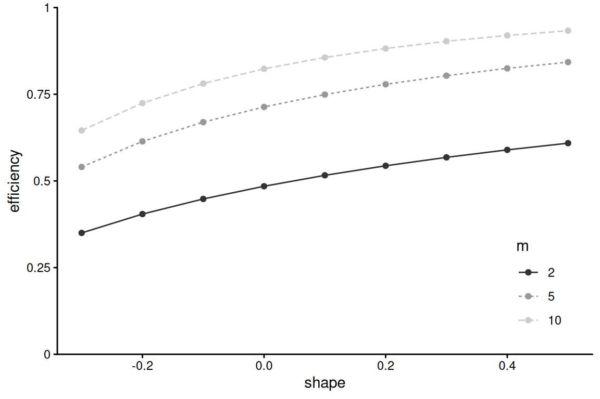
Marginal likelihood
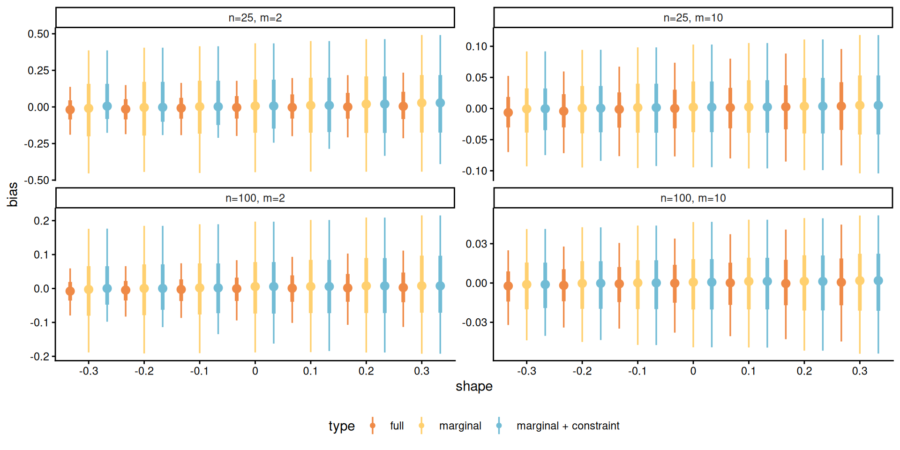
Figure 5: Interval plots showing median, 50% and 90% intervals of the bias of maximum likelihood estimators of the shape parameters for datasets drawn from a GEV with shape \(\xi\) for \(m \in \{2, 10\}\) and \(n \in \{25,100\}\).
Data applications
Cheeseboro wind gusts
We use daily data from the Western Regional Climate Center for the Cheeseboro weather station.
The data consist of daily maximum gust wind speed (in meters per second) for 1 January to 1 February inclusive between 1996 and 2026, a total of 961 records.
We test for different block sizes \(m \in \{1, 2, 4, 8, 16, 32\}\) days.
Diagnostic plots
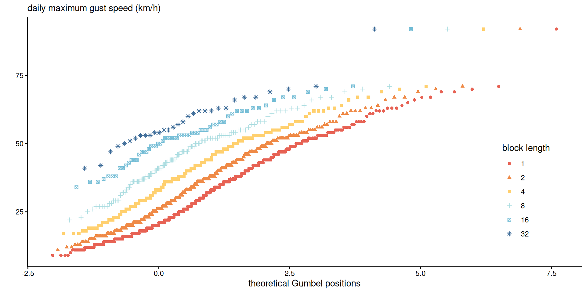
Figure 6: Gumbel plot of \(m\)-day maxima against standard Gumbel plotting positions \(-\log[-\log\{i/(n_m+1)\}]\) for the Cheeseboro wind gust data.
Plot à la Cox et al. (2002). With Gumbel fit, lines should be parallel.
P-values for test for wind gusts at Cheeseboro
| \(c=2\) | \(c=4\) | |||||
|---|---|---|---|---|---|---|
| block | \(A_1\) | \(A_2\) | \(A_3\) | \(A_1\) | \(A_2\) | \(A_3\) |
| \(m=1\) | 0 | 0 | 0 | 0 | 0 | 0 |
| \(m=2\) | 0.013 | 0.045 | 0 | 0.12 | 0.29 | 0 |
| \(m=4\) | 0.373 | 0.537 | 0.16 | 0.19 | 0.4 | 0.18 |
| \(m=8\) | 0.135 | 0.316 | 0.45 | 0.64 | 0.76 | 0.81 |
Probability-probability plots of maxima
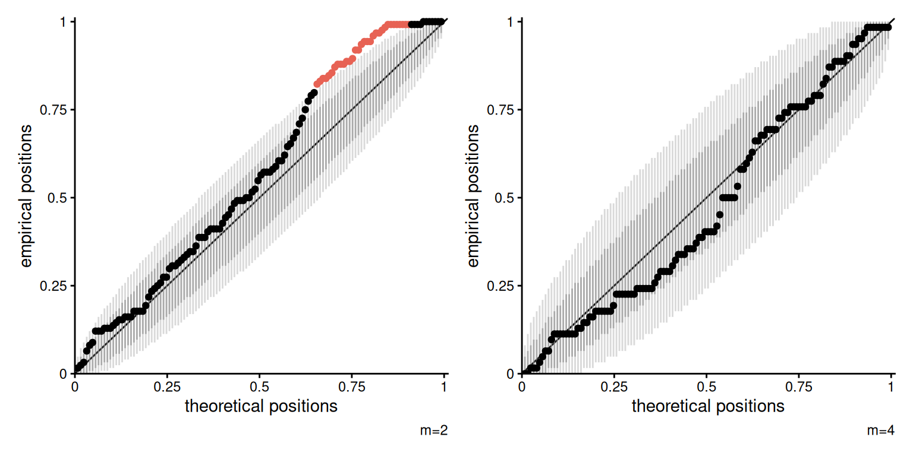
Risk extrapolation
The block length can have a sizeable impact on risk estimation (sample maximum is 92 mph \(\sim\) 148km/h). Shape of \(\widehat{\xi}=0.18\) for \(m=1,\) versus \(\xi=-0.09\) for \(m=4.\)
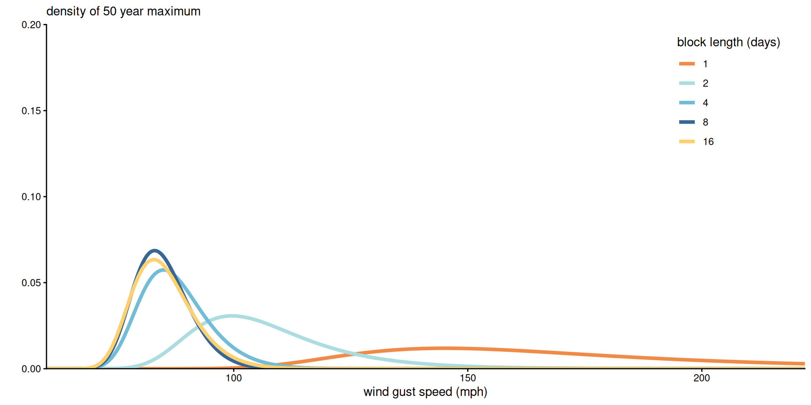
Inference for extremes
Use GEV model fitted to blocks of size \(4\) days to calculate risk measures for the maximum 50 years wind gust, by using the max-stability relationship with \(m=8 \times 50.\)
- The estimated median of half-century maximum daily wind gust is 86.73 miles per hour
- 95% profile-based confidence intervals: (83.06, 105.07) mph.
- Negligible serial correlation.
Application 2: landslide-triggering rainfall episodes
We look at data from the Abisko scientific research station, located in Lapland (Sweden).
- The daily data run from January 1913 until December 2014.
- The region around the station is prone to landslides, which are caused by prolonged heavy rainfall episodes.
- Guzzetti et al. (2007) identify intensity-duration combinations that are likely to lead to landslides, for three day rainfall, rainfall episodes beyond 69.9mm;
We compute 3 day running sums and consider rainfall with 12 periods of 7 days from June 15th every year to ensure approximate stationarity.
Tests for block-length
Since rainfall can be small, we left-censor maxima below 10 mm.
- The proportion of points being left-censored is 0.62 for weekly maxima, 0.19 for monthly and none for seasonal.
P-values for the test of max-stability: comparing
- 7-day to 28-day maxima (\(m=4\)) yields \(p\)-values less than \(10^{-15}.\)
- 28-day to seasonal (\(m=3\)) leads to \(p\)-values of \(0.41\) for \(A_1\), \(0.41\) for \(A_2\) and \(0.79\) for \(A_3.\)
Thus, monthly blocks appear sufficiently long.
Risk assessment for Abisko rainfall
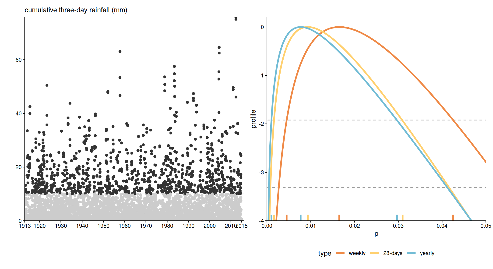
Figure 7: Time series of three-day cumulated rainfall measurements (in mm) and profile likelihood for the probability of having a summer rainfall exceeding 69.9mm based on the GEV model fitted to weekly, 28-days and yearly maxima (right).
Summary
We propose likelihood ratio tests for testing max-stability for blocks of size \(m\)
- Build block of \(n/m \times m\) ordered data from maxima.
- Check fit to largest (max of \(m\)) and use max-stability to detect departures.
- Simulation studies show the test is powerful even in small samples.
- The test with a single parameter seems more powerful than competitors, with lower values of \(m\).
Diagnostic plots based on bootstrap to account for goodness-of-fit.
Limitations
- We consider only block maxima of length \(m_2 = cm_1\) for \(m_1, m_2, c \in \mathbb{N}\) (multiples):
- does not allow for comparison of blocks of size 2 vs 3, say.
- some data discarded if \(n\) is not divisible by \(m\) (but could use ideas from Simpson and Northrop (2026)).
- in practice it is natural to consider aggregation of periods, e.g., monthly to yearly.
- The scheme leads to multiple testing if multiple values of \(m\) and block lengths are considered:
- smaller values of \(m\) should lead to higher power, as shown through simulations,
- but the choice of \(m\) should be dictated more by practical considerations.
- Our approach is restricted to independent or stationary time series.
Extensions and future work
- Combining model with estimates of the extremal index \(\theta.\)
- Alternative estimators for the GEV built from sliding blocks (e.g., Bücher and Zanger 2023).
Theory for these is more complicated, owing to lack of genuine likelihood.
- Could consider Wald-based tests with sandwich-based or bootstrap covariance estimators.
CJS special number on “Modern Issues in Statistics Education”
The Canadian Journal of Statistics (CJS) is planning a special issue on challenges and opportunities in statistics and data science education. We invite research papers and other forms of scholarly work, such as comprehensive reviews of research and scholarly teaching practice, and position papers from statistics and data science education scholars that offer evidence-based recommendations.
Guest editors: Léo Belzile and Bethany White (University of Toronto).
References
Bücher, Axel, and Leandra Zanger. 2023. “On the Disjoint and Sliding Block Maxima Method for Piecewise Stationary Time Series.” The Annals of Statistics 51 (2): 573–98. https://doi.org/10.1214/23-aos2260.
Bücher, Axel, and Chen Zhou. 2021. “A Horse Race Between the Block Maxima Method and the Peak-over-Threshold Approach.” Statistical Science 36 (3): 360–78. https://doi.org/10.1214/20-sts795.
Cox, D. R., V. S. Isham, and P. J. Northrop. 2002. “Floods: Some Probabilistic and Statistical Approaches.” Philosophical Transactions of the Royal Society A: Mathematical, Physical and Engineering Sciences 360 (1796): 1389–408. https://doi.org/10.1098/rsta.2002.1006.
Dkengne, Pascal Sielenou, Stéphane Girard, and Samia Ahiad. 2020. An Automatic Procedure to Select a Block Size in the Continuous Generalized Extreme Value Model Estimation. https://inria.hal.science/hal-02952279.
Fisher, R. A., and L. H. C. Tippett. 1928. “Limiting Forms of the Frequency Distribution of the Largest or Smallest Member of a Sample.” Mathematical Proceedings of the Cambridge Philosophical Society 24 (2): 180–90. https://doi.org/10.1017/S0305004100015681.
Gnedenko, B. 1943. “Sur La Distribution Limite Du Terme Maximum d’une Série Aléatoire.” Annals of Mathematics 44 (3): 423–53. https://doi.org/10.2307/1968974.
Gumbel, E. J. 1958. Statistics of Extremes. Columbia University Press. https://doi.org/10.7312/gumb92958.
Guzzetti, F., S. Peruccacci, M. Rossi, and C. P. Stark. 2007. “Rainfall Thresholds for the Initiation of Landslides in Central and Southern Europe.” Meteorology and Atmospheric Physics 98 (3): 239–67. https://doi.org/10.1007/s00703-007-0262-7.
Leadbetter, M. R. 1974. “On Extreme Values in Stationary Sequences.” Zeitschrift für Wahrscheinlichkeitstheorie Und Verwandte Gebiete 28 (4): 289–303. https://doi.org/10.1007/BF00532947.
Leadbetter, M. R. 1983. “Extremes and Local Dependence in Stationary Sequences.” Zeitschrift für Wahrscheinlichkeitstheorie Und Verwandte Gebiete 65 (2): 291–306. https://doi.org/10.1007/BF00532484.
Leadbetter, M. R., Georg Lindgren, and Holger Rootzén. 1983. Extremes and Related Properties of Random Sequences and Processes. 1st ed. Springer. https://doi.org/10.1007/978-1-4612-5449-2.
Mises, Richard von. 1936. “La Distribution de La Plus Grande de \(n\) Valeurs.” Revue Mathématique de l’Union Interbalkanique 1: 141–60.
Säilynoja, Teemu, Paul-Christian Bürkner, and Aki Vehtari. 2022. “Graphical Test for Discrete Uniformity and Its Applications in Goodness-of-Fit Evaluation and Multiple Sample Comparison.” Statistics and Computing 32 (2): 32. https://doi.org/10.1007/s11222-022-10090-6.
Simpson, Emma S., and Paul J. Northrop. 2026. “Accounting for Missing Data When Modelling Block Maxima.” Environmetrics 37 (2): e70075. https://doi.org/10.1002/env.70075.
Smith, Richard L. 1987. Approximations in Extreme Value Theory. Department of Statistics; Operations Research, University of North Carolina. https://lbelzile.bitbucket.io/papers/Smith-1987-Approximations-in-extreme-value-theory.pdf.
Valadares Tavares, L. 1977. “The Exact Distribution of Extremes of a Non-Gaussian Process.” Stochastic Processes and Their Applications 5 (2): 151–56. https://doi.org/10.1016/0304-4149(77)90026-6.
Varty, Zak, Jonathan A. Tawn, Peter M. Atkinson, and Stijn Bierman. 2021. Inference for Extreme Earthquake Magnitudes Accounting for a Time-Varying Measurement Process. https://doi.org/10.48550/arXiv.2102.00884.
Wang, Jixin, Shuang You, Yuqian Wu, Yingshuang Zhang, and Shibo Bin. 2016. “A Method of Selecting the Block Size of BMM for Estimating Extreme Loads in Engineering Vehicles.” Mathematical Problems in Engineering 2016 (1): 6372197. https://doi.org/10.1155/2016/6372197.

Comments on power curves